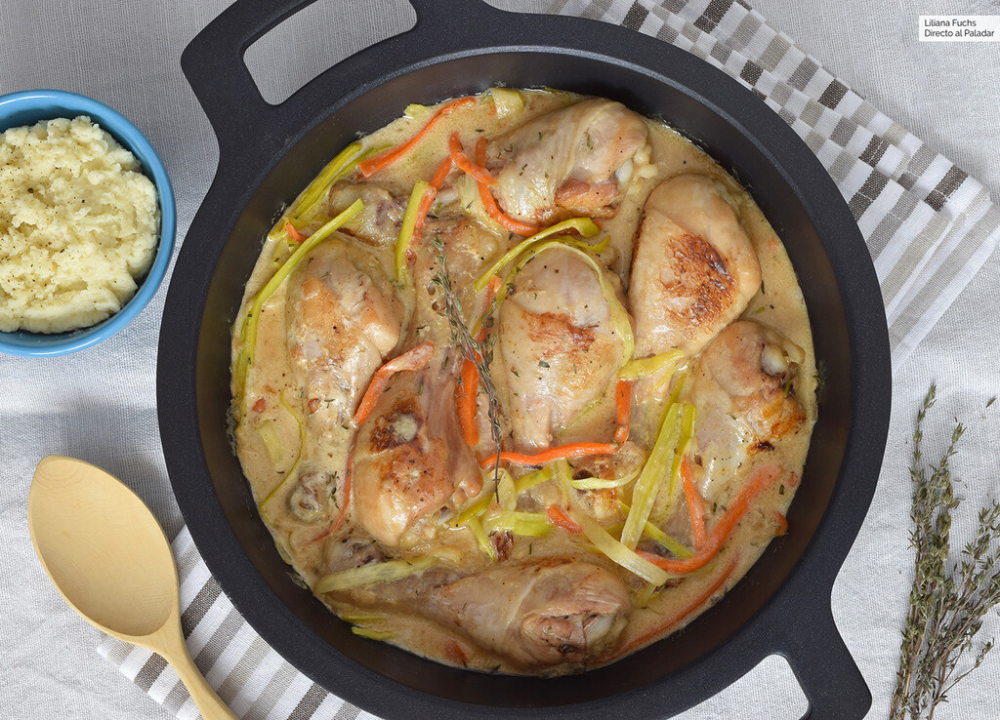

Fricasse de Pollo al Vermut

La fricassé es una preparación típica de la cocina francesa que hoy en día se ha internacionalizado e incluso
tenemos su forma castellana incorporada a nuestro vocabulario. A medio camino entre el salteado y un guiso,
es una técnica muy versátil y práctica que puede dar juego con distintas variantes. Hoy os propongo probar esta
receta de fricasé de pollo al vermut, un plato que en cuanto lo vi me llamó mucho la atención.
Con que acompanarlo
Este fricasé de pollo al vermut es un plato muy reconfortante gracias a su aromática salsa, que nos pedirá algo de pan
para acompañar. Como guarnición podemos elegir un simple arroz blanco, cuscús o puré de patatas, que acompaña de
maravilla los guisos salseros como este.
Ingredients
- 1kg de Muslos de pollo
- Cebolla, ajo, zanahoria, puerro
- Caldo de verduras o de pollo
- Mantequilla
- Vermut blanco
- Crema de leche
- Harina de trigo
- Aceite de Oliva
- Especies
- Sal y pimienta
Procedimiento
- Salpimentar el pollo. Picar la cebolla y el diente de ajo. Cortar la zanahoria y el puerro en juliana fina y reservar.
Calentar un poco de aceite de oliva en una cazuela amplia y dorar la carne a fuego medio-alto, girándolo para que
coja color por todos lados. Añadir la cebolla y el ajo y saltear el conjunto unos 5 minutos, cuidando que no se queme.
- Añadir la harina, remover y agregar el tomillo y el laurel. Incorporar el vermut y el caldo, remover para que se
integre todo, tapar y bajar el fuego. Cocinar unos 20 minutos a fuego bajo. Mientras tanto, blanquear la zanahoria
y el puerro en agua hirviendo o cocerlos en el microondas. Podemos dejarlos más al dente si preferimos que queden algo crujientes.
- Pasado el tiempo del pollo, añadir las verduras y la nata, removiendo con suavidad. Cocinar todo junto unos pocos minutos más,
dejando que la salsa reduzca al gusto. Agregar un golpe más de pimienta negra recién molida antes de servir.
Back